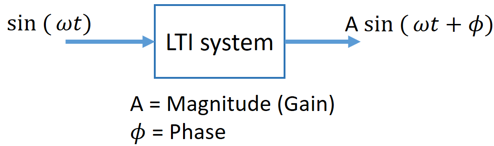
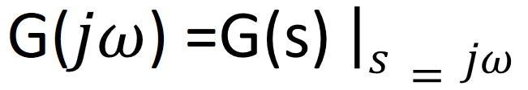

HOME BLOG EBOOKS ABOUT CONTACT SHOP
When a sinusoidal input is applied to an LTI system, the output will also be an LTI system. The only things that may change are the Amplitude and Phase of the applied signal. This property is known as Sinusoidal fidelity. In fact, this property is used to determine whether a system is LTI or not practically.

The key inference to be made from this property is that, both the input and the output signals will have the same frequency components (Refer Fourier series) i.e. No frequency components can be manufactured other than the one's already present in the input signal (ideally).
This means that any LTI can be completely described by how it changes the amplitude and phase of sinusoids passing through it. This information is called the system's Frequency response. Just like the time domain transfer function, we can define a transfer function in the frequency domain. The sinusoidal transfer function G(jω) is a complex quantity and can be represented as a magnitude and phase angle with frequency ω being the variable parameter.
The frequency domain transfer function of an LTI system can be obtained by substituting jω for ‘s’ in the time domain transfer function G(s) of the system.

So to obtain the frequency response means to sketch the variation in magnitude and phase angle of G(jω), as ω is varied from 0 to infinity . Many methods like Bode plot, Nyquist plot, Polar plot and M-ɸ plot are used to sketch the frequency response of control systems.